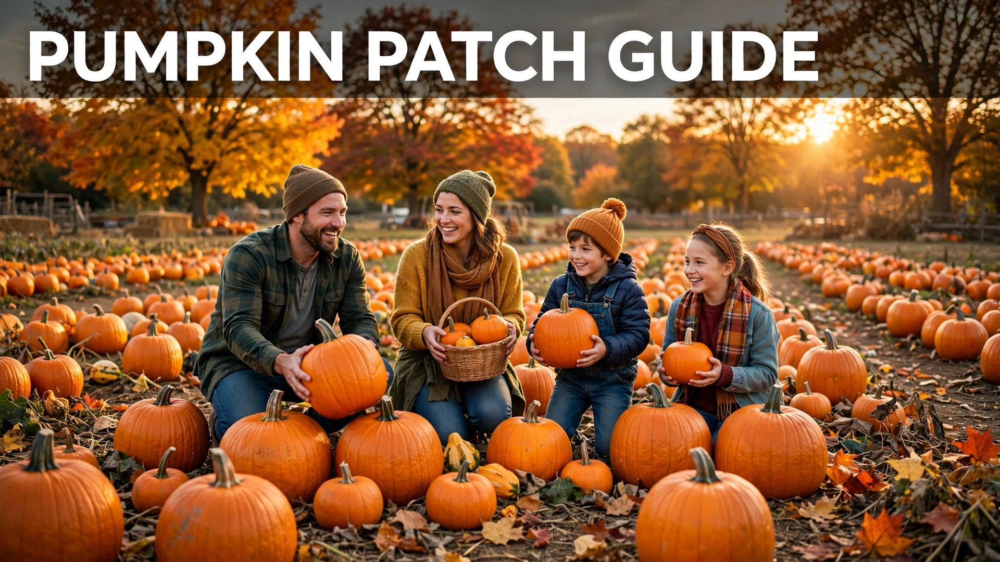

Few autumn outings beat a crisp morning at the pumpkin patch: rows of glowing orange pumpkins, hay bales, the smell of hot cider, and kids sprinting between the vines hunting for the biggest one. A pumpkin patch visit is part farm adventure, part photo shoot, and the first real step of your Halloween season — because the pumpkin you carry home becomes your jack-o'-lantern, your porch decor, and maybe your pie.
This 2026 pumpkin patch guide covers everything you need for a great visit: how to pick the perfect pumpkin (ripe, sturdy, and carve-ready), what to wear for muddy fields and chilly mornings, where to find the best photo spots, and the activities that keep kids and families entertained for hours. Most patches open in late September and run through Halloween weekend, so aim for a dry morning in early to mid-October when the selection is at its best.
Why a Pumpkin Patch Visit Is the Perfect Fall Outing
Pumpkin patches deliver something a grocery store bin never can: the experience. Kids learn where pumpkins actually grow, everyone gets fresh air and exercise, and the whole trip doubles as the season's best photo opportunity. Many patches have grown into full fall festivals with corn mazes, hayrides, cider donuts, and farm animals, so you can easily fill half a day. It is also one of the most affordable family outings of the season — entry is often free or just a few dollars, and you only pay for the pumpkins you take home. For families starting Halloween traditions, the annual pumpkin patch trip is usually the one everyone remembers.
How to Pick the Perfect Pumpkin
Not all pumpkins are equal, and the prettiest one in the field is not always the best one to carve. Use this checklist as you wander the vines:
- Check the stem: a firm, green, intact stem means the pumpkin was cut recently and will last longer. Avoid pumpkins with missing or mushy stems.
- Knock on it: a ripe pumpkin sounds hollow when you thump it, like knocking on a door.
- Look for even color: deep, consistent orange (or the variety's natural color) with no soft spots, bruises, or mold around the base.
- Press gently: the skin should be hard and resist your fingernail. Soft spots mean it will rot quickly.
- Pick it up: it should feel heavy for its size. Lift from the bottom, never by the stem, which can snap off.
- Choose a flat side: if you plan to carve, look for a pumpkin with one smooth, blemish-free face for your design.
- Match the purpose: big round pumpkins for carving, small sugar pumpkins for cooking, and warty or white varieties for decoration.
Pro tip: bring a wagon or wheelbarrow if the patch allows it. A good carving pumpkin can weigh 15 to 25 pounds, and carrying it across a muddy field is nobody's idea of fun.
What to Wear to a Pumpkin Patch
Pumpkin patches are working farms, so dress for the field, not the photoshoot — though with the right layers you can manage both. October weather swings fast: chilly mornings warm up by noon, and fields stay damp for days after rain.
- Footwear first: waterproof boots or old sneakers with good grip. Fields are muddy, uneven, and full of vines. This is not the day for white shoes.
- Layers: a flannel or sweater over a T-shirt, plus a light jacket you can tie around your waist later.
- Jeans or durable pants: pumpkin vines are scratchy, and you will be crouching and kneeling in the dirt.
- Warm colors for photos: rust, mustard, forest green, cream, and denim photograph beautifully against orange pumpkins.
- Extras: a beanie and gloves for early mornings, sunscreen for midday, and a tote bag for small pumpkins and gourds.
Best Photo Spots at the Pumpkin Patch
Every patch has its signature spots, and the staff usually know where the light is best. Arrive in the morning or late afternoon for the golden light that makes orange pumpkins glow.
- The pumpkin wall: stacked-pumpkin displays and barn walls covered in gourds make perfect backdrops.
- Hay bale pyramids: kids climbing (safely) on hay bales is the classic patch photo.
- The sunflower or cornfield edge: tall crops frame portraits beautifully.
- The wheelbarrow shot: a little one sitting in a wheelbarrow of mini pumpkins never fails.
- Candid picking shots: the best photos are mid-action — your child triumphantly lifting their chosen pumpkin.
Take the posed family photo early, then put the phone away and enjoy the patch. The candids you grab later will be the keepers anyway.
Fun Activities for Kids and Families
Most 2026 pumpkin patches offer far more than pumpkins. Plan for two to three hours and let kids lead the schedule:
- Corn mazes: many patches include a small maze; bigger farms run multi-acre ones with scavenger-hunt checkpoints.
- Hayrides: a slow wagon loop around the farm is pure autumn magic for little kids.
- Pumpkin picking games: who can find the smallest pumpkin, the weirdest shape, or the perfect carving candidate.
- Farm animals: petting zoos with goats, chickens, and rabbits are patch staples.
- Cider and treats: hot apple cider, cider donuts, kettle corn, and caramel apples are half the reason to go.
- Pumpkin bowling or chucking: some farms set up pumpkin bowling lanes or slingshot-style pumpkin launches for older kids.
Tips for a Smooth Pumpkin Patch Visit
A little planning turns a good patch day into a great one. Go on a weekday morning if you can — weekends in mid-October draw the biggest crowds and the thinnest pumpkin selection. Check the patch's website or social media before you leave for hours, ticket prices, and whether they take cards (many farm stands are still cash-friendly). Bring hand wipes and a change of shoes for the car, and pack a cooler with water and snacks for the drive home. Finally, have a plan for your pumpkins: keep them in a cool, shaded spot (not on hot concrete) and wait to carve until the week of Halloween so your jack-o'-lantern looks fresh on October 31.